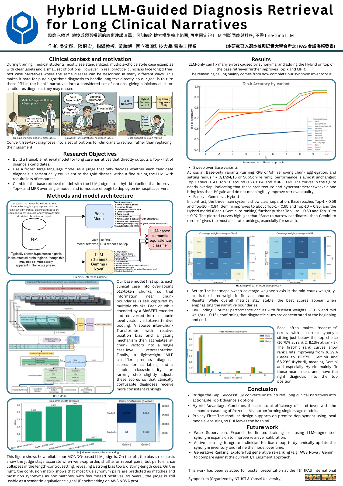

Research project研究專案20232023
LLM-Guided Retrieval for Clinical Narratives (RAG)長篇臨床敘述的 LLM 導引檢索（RAG）
Lab of Medical Imaging · NTUST醫學影像實驗室 · NTUST
From the portfolio of Louis (DingXu) WuLouis 吳定栩的專案作品集
A hybrid retrieval system for long-form clinical narratives, combining a chunked BioBERT retriever, sparse cross-chunk aggregation, and LLM-based equivalence judging for diagnosis re-ranking.針對長篇臨床敘述設計的混合式檢索系統：以分段 BioBERT 檢索器搭配稀疏跨片段聚合，並以 LLM 等價判定器進行診斷重排序。
Highlights
- Built a hybrid LLM-guided retrieval system for clinical narratives using a chunked BioBERT retriever with sparse cross-chunk aggregation.
- Improved the RAG pipeline by applying LLM-based equivalence judging for diagnosis re-ranking, enhancing search precision.
Conference
- Oral & Poster presentation at the 2025 IPAS Conference (NTUST × Yonsei University).
Tech Stack
研究亮點
- 建置長篇臨床敘述的混合式 LLM 導引檢索系統：以分段 BioBERT 檢索器搭配稀疏跨片段聚合。
- 以 LLM 等價判定器進行診斷重排序，改善 RAG 檢索精度。
會議發表
- 2025 IPAS Conference（國立臺灣科技大學 × 延世大學）口頭與海報發表。
技術
Research poster研究海報
PDF